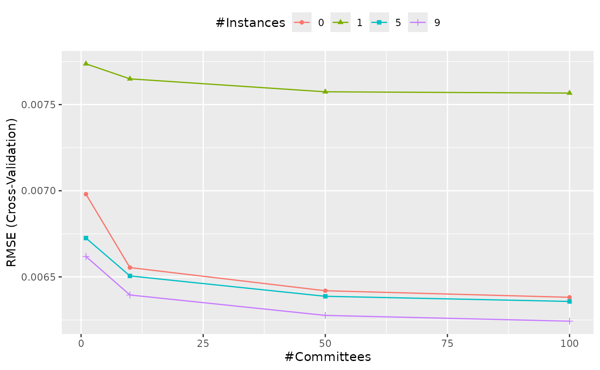

The main two parameters for this model are the number of committees as well as the number of neighbors (if any) to use to adjust the model predictions. We’ll use two different packages for model tuning. Each will split and resample the data with different code. Their results will be very similar but will not be equal.
Before starting, we’ll use the Ames housing data again.
data(ames, package = "modeldata")
# model the data on the log10 scale
ames$Sale_Price <- log10(ames$Sale_Price)
predictors <-
c("Lot_Area", "Alley", "Lot_Shape", "Neighborhood", "Bldg_Type",
"Year_Built", "Total_Bsmt_SF", "Central_Air", "Gr_Liv_Area",
"Bsmt_Full_Bath", "Bsmt_Half_Bath", "Full_Bath", "Half_Bath",
"TotRms_AbvGrd", "Year_Sold", "Longitude", "Latitude")
ames$Sale_Price <- log10(ames$Sale_Price)
ames <- ames[, colnames(ames) %in% c("Sale_Price", predictors)]To tune the model over different values of neighbors and committees, the train function in the caret package can be used to optimize these parameters. For example, to split the data:
library(caret)
set.seed(1)
in_train <- createDataPartition(ames$Sale_Price, times = 1, list = FALSE)
caret_train <- ames[ in_train,]
caret_test <- ames[-in_train,]We’ll use basic 10-fold cross-validation to tune the models over the two parameters. Although train() can make its own grid, we’ll use a regular grid with four values per parameter:
grid <- expand.grid(committees = c(1, 10, 50, 100), neighbors = c(0, 1, 5, 9))
set.seed(2)
caret_grid <- train(
x = subset(caret_train, select = -Sale_Price),
y = caret_train$Sale_Price,
method = "cubist",
tuneGrid = grid,
trControl = trainControl(method = "cv")
)
caret_grid## Cubist
##
## 1466 samples
## 17 predictor
##
## No pre-processing
## Resampling: Cross-Validated (10 fold)
## Summary of sample sizes: 1320, 1320, 1318, 1321, 1319, 1318, ...
## Resampling results across tuning parameters:
##
## committees neighbors RMSE Rsquared MAE
## 1 0 0.006980097 0.7823656 0.004445466
## 1 1 0.007736511 0.7607675 0.004892528
## 1 5 0.006725394 0.8022236 0.004216278
## 1 9 0.006618399 0.8077642 0.004161582
## 10 0 0.006554084 0.8089811 0.004105507
## 10 1 0.007649352 0.7658593 0.004737154
## 10 5 0.006505652 0.8154348 0.004058009
## 10 9 0.006394992 0.8208995 0.004005872
## 50 0 0.006419605 0.8170101 0.004032752
## 50 1 0.007574183 0.7703286 0.004686879
## 50 5 0.006387367 0.8218289 0.003998214
## 50 9 0.006276516 0.8272191 0.003941817
## 100 0 0.006381553 0.8191074 0.004008798
## 100 1 0.007566783 0.7703920 0.004680454
## 100 5 0.006357572 0.8232121 0.003983422
## 100 9 0.006243052 0.8288578 0.003926840
##
## RMSE was used to select the optimal model using the smallest value.
## The final values used for the model were committees = 100 and neighbors = 9.Note that the x/y interface was used. This keeps factor predictors intact; if the formula method had been used, factor predictors like Neighborhood would have been converted to binary indicator columns. That would not cause an error, but Cubist usually works better without the indicators columns.
The next figure shows the profiles of the tuning parameters produced using ggplot(caret_grid).

The caret_grid object selected and fit the final model (with the best results). The test data are predicted using:
## [1] 0.7239910 0.7271985 0.7235518 0.7224333 0.7280025 0.7244288The tidymodels packages have a slightly different approach to package development. Whereas caret contains a large number of functions, tidymodels splits the code into small packages that do a few common tasks (e.g. resampling, performance estimation). To start, load the tidymodels package and this will attach the main set of core packages:
## ── Attaching packages ────────────────────────────────────── tidymodels 0.1.3 ──## ✔ broom 0.7.6 ✔ rsample 0.1.0
## ✔ dials 0.0.9 ✔ tibble 3.1.2
## ✔ dplyr 1.0.6 ✔ tidyr 1.1.3
## ✔ infer 0.5.4 ✔ tune 0.1.5
## ✔ modeldata 0.1.0 ✔ workflows 0.2.2
## ✔ parsnip 0.1.5 ✔ workflowsets 0.0.2
## ✔ purrr 0.3.4 ✔ yardstick 0.0.8
## ✔ recipes 0.1.16## ── Conflicts ───────────────────────────────────────── tidymodels_conflicts() ──
## ✖ purrr::discard() masks scales::discard()
## ✖ dplyr::filter() masks stats::filter()
## ✖ dplyr::lag() masks stats::lag()
## ✖ purrr::lift() masks caret::lift()
## ✖ yardstick::precision() masks caret::precision()
## ✖ yardstick::recall() masks caret::recall()
## ✖ yardstick::sensitivity() masks caret::sensitivity()
## ✖ yardstick::specificity() masks caret::specificity()
## ✖ recipes::step() masks stats::step()
## • Use tidymodels_prefer() to resolve common conflicts.tidymodels_prefer() resolves the naming conflicts between it and caret functions. For example, invoking sensitivity will now point towards the tidymodels version (but the other function can be used via caret::sensitivity()).
If you are new to tidymodels, we suggest taking a look at tidymodels.org or the book Tidy Modeling with R.
We’ll split the data into training and test data sets, then use the vfold_cv() function to create cross-validation folds. There are stored in a tibble object( basically a data frame):
set.seed(3)
split <- initial_split(ames, strata = Sale_Price)
tm_train <- training(split)
tm_test <- testing(split)
set.seed(4)
cv_folds <- vfold_cv(tm_train, strata = Sale_Price)
cv_folds## # 10-fold cross-validation using stratification
## # A tibble: 10 x 2
## splits id
## <list> <chr>
## 1 <split [1976/221]> Fold01
## 2 <split [1976/221]> Fold02
## 3 <split [1976/221]> Fold03
## 4 <split [1976/221]> Fold04
## 5 <split [1977/220]> Fold05
## 6 <split [1977/220]> Fold06
## 7 <split [1978/219]> Fold07
## 8 <split [1978/219]> Fold08
## 9 <split [1979/218]> Fold09
## 10 <split [1980/217]> Fold10To use this model, we define the model specification object and tag which parameters that we want to tune for this model (with a value of tune()). the package that contains the model functions for rule-based models is called rules; we load that first.
library(rules)
cubist_spec <-
cubist_rules(committees = tune(), neighbors = tune()) %>%
set_engine("Cubist")
cubist_spec## Cubist Model Specification (regression)
##
## Main Arguments:
## committees = tune()
## neighbors = tune()
##
## Computational engine: CubistNow we can use the tune_grid() function to estimate performance for all of the parameters in the grid data frame:
tm_grid <-
cubist_spec %>%
tune_grid(Sale_Price ~ ., resamples = cv_folds, grid = grid)
tm_grid## # Tuning results
## # 10-fold cross-validation using stratification
## # A tibble: 10 x 4
## splits id .metrics .notes
## <list> <chr> <list> <list>
## 1 <split [1976/221]> Fold01 <tibble [32 × 6]> <tibble [0 × 1]>
## 2 <split [1976/221]> Fold02 <tibble [32 × 6]> <tibble [0 × 1]>
## 3 <split [1976/221]> Fold03 <tibble [32 × 6]> <tibble [0 × 1]>
## 4 <split [1976/221]> Fold04 <tibble [32 × 6]> <tibble [0 × 1]>
## 5 <split [1977/220]> Fold05 <tibble [32 × 6]> <tibble [0 × 1]>
## 6 <split [1977/220]> Fold06 <tibble [32 × 6]> <tibble [0 × 1]>
## 7 <split [1978/219]> Fold07 <tibble [32 × 6]> <tibble [0 × 1]>
## 8 <split [1978/219]> Fold08 <tibble [32 × 6]> <tibble [0 × 1]>
## 9 <split [1979/218]> Fold09 <tibble [32 × 6]> <tibble [0 × 1]>
## 10 <split [1980/217]> Fold10 <tibble [32 × 6]> <tibble [0 × 1]>The results can be sown as a table or a plot:
collect_metrics(tm_grid)## # A tibble: 32 x 8
## committees neighbors .metric .estimator mean n std_err .config
## <dbl> <dbl> <chr> <chr> <dbl> <int> <dbl> <chr>
## 1 1 0 rmse standard 0.00700 10 0.000425 Preprocessor1…
## 2 1 0 rsq standard 0.778 10 0.0224 Preprocessor1…
## 3 1 1 rmse standard 0.00776 10 0.000404 Preprocessor1…
## 4 1 1 rsq standard 0.744 10 0.0202 Preprocessor1…
## 5 1 5 rmse standard 0.00668 10 0.000403 Preprocessor1…
## 6 1 5 rsq standard 0.799 10 0.0210 Preprocessor1…
## 7 1 9 rmse standard 0.00666 10 0.000410 Preprocessor1…
## 8 1 9 rsq standard 0.800 10 0.0213 Preprocessor1…
## 9 10 0 rmse standard 0.00625 10 0.000371 Preprocessor1…
## 10 10 0 rsq standard 0.823 10 0.0198 Preprocessor1…
## # … with 22 more rows
autoplot(tm_grid, metric = "rmse")We can select a parameter combination as the final configuration and update our model specification object with those values.
cubist_fit <-
cubist_spec %>%
finalize_model(select_best(tm_grid, metric = "rmse")) %>%
fit(Sale_Price ~ ., data = tm_train)
predict(cubist_fit, head(tm_test))## # A tibble: 6 x 1
## .pred
## <dbl>
## 1 0.723
## 2 0.725
## 3 0.720
## 4 0.759
## 5 0.744
## 6 0.729This can be more easily done with last_fit():
cubist_results <-
cubist_spec %>%
finalize_model(select_best(tm_grid, metric = "rmse")) %>%
last_fit(Sale_Price ~ ., split = split)
cubist_results## # Resampling results
## # Manual resampling
## # A tibble: 1 x 6
## splits id .metrics .notes .predictions .workflow
## <list> <chr> <list> <list> <list> <list>
## 1 <split [2197… train/test … <tibble [2 ×… <tibble [0… <tibble [733 ×… <workflo…
# test set results:
collect_metrics(cubist_results)## # A tibble: 2 x 4
## .metric .estimator .estimate .config
## <chr> <chr> <dbl> <chr>
## 1 rmse standard 0.00576 Preprocessor1_Model1
## 2 rsq standard 0.857 Preprocessor1_Model1
# test set predictions:
collect_predictions(cubist_results)## # A tibble: 733 x 5
## id .pred .row Sale_Price .config
## <chr> <dbl> <int> <dbl> <chr>
## 1 train/test split 0.723 5 0.723 Preprocessor1_Model1
## 2 train/test split 0.725 10 0.722 Preprocessor1_Model1
## 3 train/test split 0.720 11 0.720 Preprocessor1_Model1
## 4 train/test split 0.760 16 0.758 Preprocessor1_Model1
## 5 train/test split 0.744 18 0.748 Preprocessor1_Model1
## 6 train/test split 0.730 20 0.726 Preprocessor1_Model1
## 7 train/test split 0.726 23 0.727 Preprocessor1_Model1
## 8 train/test split 0.708 27 0.708 Preprocessor1_Model1
## 9 train/test split 0.712 34 0.714 Preprocessor1_Model1
## 10 train/test split 0.744 37 0.746 Preprocessor1_Model1
## # … with 723 more rows